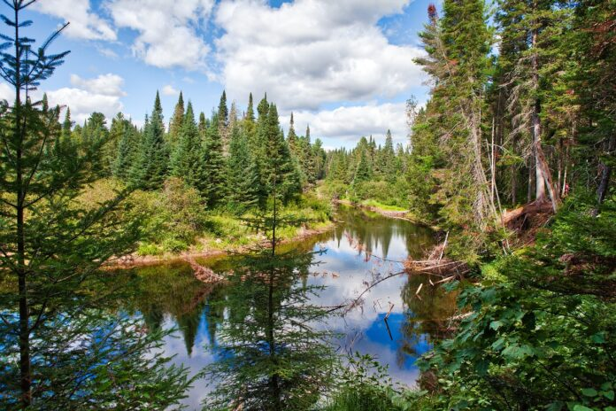
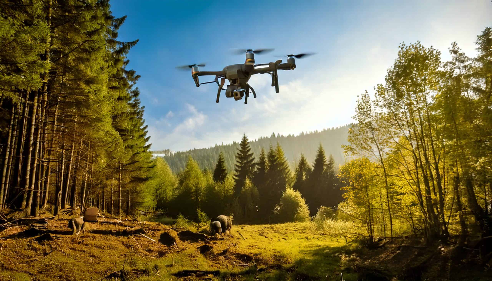

L'Obiettivo 15: Preservare la Vita Terrestre
L'Obiettivo 15 dell'Agenda 2030 si pone come missione la protezione, il ripristino e la promozione dell'uso sostenibile degli ecosistemi terrestri. Foreste, zone umide e montagne forniscono servizi vitali come la purificazione dell'aria e dell'acqua. Tuttavia, attività umane come la deforestazione e il bracconaggio stanno mettendo a rischio il delicato equilibrio da cui dipende la nostra stessa sopravvivenza.
Oggi, la tecnologia non è più vista come un nemico della natura, ma come una sua alleata fondamentale. Il monitoraggio remoto e la gestione dei dati sono diventati strumenti indispensabili per fermare la perdita di biodiversità.

Sicurezza delle Reti contro il Bracconaggio
La protezione delle riserve naturali si affida sempre più a sistemi di videosorveglianza e droni anti-bracconaggio. Queste tecnologie utilizzano reti wireless che devono essere rigorosamente cifrate. Se un malintenzionato riuscisse a intercettare i segnali dei droni, potrebbe conoscere l'esatta posizione degli animali protetti, facilitando paradossalmente l'attività dei bracconieri.
Inoltre, i sensori posizionati nelle foreste per rilevare incendi o il rumore di motoseghe illegali devono inviare dati integri. La sicurezza della rete impedisce il sabotaggio di questi sensori, garantendo che le autorità possano intervenire tempestivamente in caso di emergenza.

Tecnologie per la Ricerca e il Monitoraggio
Gli scienziati che lavorano sul campo hanno la necessità di trasmettere dati sensibili sulle specie a rischio ai laboratori centrali. L'utilizzo di Tunneling VPN è essenziale per evitare l'intercettazione di queste rotte migratorie o dati genetici durante il transito su reti pubbliche.
Progetti come SMART (Spatial Monitoring and Reporting Tool) utilizzano piattaforme software per analizzare i movimenti dei ranger e degli animali. La sicurezza di queste infrastrutture cloud è vitale non solo per la protezione degli animali, ma anche per l'incolumità fisica dei ranger che operano in zone pericolose.
Il futuro non è una scelta tra tecnologia e natura, ma una loro integrazione armoniosa dove l'innovazione digitale protegge attivamente la vita biologica.
Soluzioni Tecniche Proposte
Per garantire l'efficacia del monitoraggio ambientale, si propongono le seguenti implementazioni tecnologiche:
| Soluzione | Descrizione e Beneficio |
|---|---|
| Zero Trust | Accesso restrittivo ai database delle specie protette: solo ricercatori autorizzati possono consultare le mappe di densità della fauna. |
| Cifratura Droni | Protocolli di rete sicuri per impedire il "GPS Spoofing" o il dirottamento del segnale dei droni di sorveglianza. |
| IA e Cloud Protetto | Sistemi di analisi sonora per individuare disboscamenti illegali in tempo reale tramite infrastrutture ridondate. |
| VPN di Ricerca | Canali sicuri per gli scienziati impegnati nel censimento delle specie in aree remote del pianeta. |
Visione Solarpunk: Un Nuovo Modo di Abitare
La filosofia Solarpunk immagina un mondo dove i traguardi del Goal 15 sono stati raggiunti. In questo scenario, le città convivono con giardini verticali, la domotica ottimizza le risorse e le comunità gestiscono i propri ecosistemi in modo autonomo e sostenibile. È un futuro inclusivo che tutela i popoli indigeni e garantisce l'accesso universale a una vita in armonia con il pianeta.